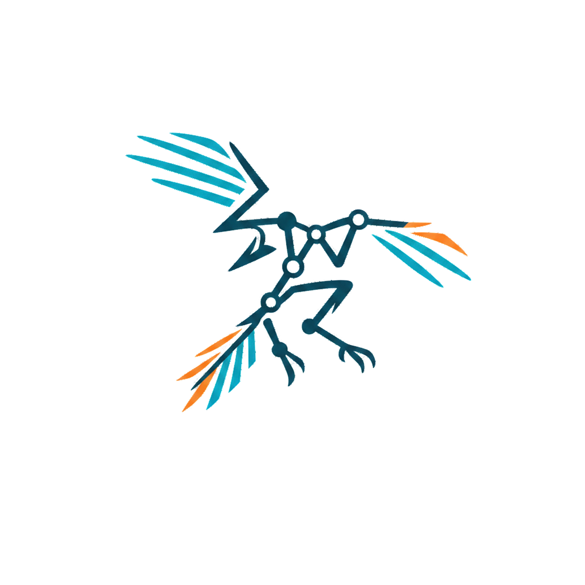

arqix
A Rust CLI for structured technical documentation and Architecture-as-Code workflows.
Markdown as data, deterministic assembly, traceability as a graph. In early development — the core works and verifies its own corpus daily; this page is a placeholder until arqix publishes its own site.